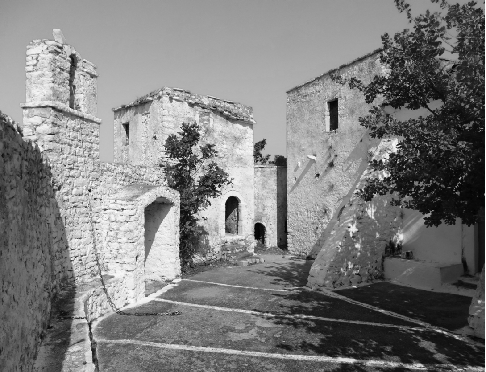

Arka është e angazhuar të sjellë projekte zhvillimore në hapësirat rurale që përmirësojnë cilësinë e jetës dhe që rrisin vlerën e investimit në kohë. Projektet synojnë të krijojnë hapësira jetese të veçanta dhe autentike, në harmoni me mjedisin, natyrën dhe traditën.
Ne ndihmojmë klientë, të cilët janë aktualisht të pa targetuar nga modeli aktual i tregut, për të krijuar së bashku hapësira jetese që respektojnë individualitetin e tyre dhe i ofrojnë më shumë vlerë për investimin e kryer. Këto projekte reflektojnë përgjegjësinë sociale të klientëve tanë, për të kontribuar pozitivisht nëpërmjet investimit, në zhvillimin e qëndrueshëm të zonës dhe komunitetit.
Qëllimi ynë
Qëllimi ynë
Identifikimi i konteksteve të nënvlerësuara me potencial zhvillimor, sipas nevojave dhe kërkesave të klientëve.
Zhvillimi i veprave autentike, të cilat janë në harmoni me kontekstin kulturor dhe natyror.
Krijimi i veprave unike, të afta për të ndërthurur individualitetin dhe kërkesat e klientëve me burimet lokale, nëpërmjet një arkitekture bashkëkohore e të bazuar në materialet, teknikën dhe gjuhën ndërtimore të zonës.
Nxitja e lidhjeve emocionale me pronën dhe hapësirën përreth, falë ndjesisë së krijimit dhe ndarjes me të tjerët të një projekti të veçantë dhe thellësisht individual.
Lidhja me natyrën, ndërgjegjësimi mbi çështjet ambientale dhe edukimi për produktet, florën dhe faunën lokale, si elemente thelbesore për rritjen e shëndetshme të fëmijëve.
Rritja e vlerës së investimit falë projekteve, me kosto të arsyeshme, që ndihmojnë ekonominë lokale dhe mbrojnë trashëgiminë kulturore e zhvillimin komunitar.
Arka shërben qytetarë të ndërgjegjshëm që shprehja e individualitetit nëpërmjet krijimit të veprave unike arkitekturore, varet nga vizioni dhe jo nga vlera monetare e shpenzuar. Ne besojmë tek ato investime që bëhen shembull suksesi, kthehen në pikë referimi dhe model frymëzimi për zhvillimin e qëndrueshëm të hapësirave të jetesës pranë natyrës. Projektet tona e tregojnë vlerën e tyre në kohë, jo vetëm falë veçorisë dhe vlerave arkitektonike, por përmes harmonizimit me më të mirën e kontekstit rural, në aspektin e peizazhit, kulturës dhe produkteve vendase.


Krijo pranë natyrës një hapësire të shenjtë, për të shijuar kënaqësinë e shkëputjes dhe emocionin e rikthimit.